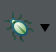

<!-- Start of markdown source -->
# Overview
Many TI Compilers have the ability to gather code coverage information via instrumentation. At build time you indicate that you wish to gather this information. The code will be instrumented. This information is highly compressed and is stored in RAM on the device. At program termination the data is transfered from the device to the host workstation for analysis.
There are different implementations of Code Coverage depending on the compiler being used. For more information you can review the [compiler manual](https://www.ti.com/tool/TI-CGT#technicaldocuments) for the compiler you are using and search for the sub-chapter that includes the word **Coverage**.
This application note is written for compilers that are based on Clang and LLVM such as the `tiarmclang` toolset. If you are using a different TI compiler please refer to
[Code Coverage using TI Compilers](https://software-dl.ti.com/ccs/esd/documents/application_notes/appnote-code_coverage_compiler.html) as the instructions are different.
# References
[TI Arm Clang Users Guide](https://software-dl.ti.com/codegen/docs/tiarmclang/compiler_tools_user_guide/compiler_manual/code_coverage/source_based_code_coverage.html)
# Supported Compilers
* `tiarmclang` 1.1.x and later
* Modified Condition/Decision Coverage (MC/DC) features require `tiarmclang` version 2.1.x or later
# Procedure
###CIO Operation
C Input/Output features of the C runtime library are required in order to transfer the coverage data from the device to the host workstation. Thus it is advised to ensure that you are able to successfully use printf() in your application as a way to test that CIO is working. This may involve needing to increase your stack and heap sizes. For help with enabling printf please refer to: [Tips for Using Printf](../sdto_cgt_tips_for_using_printf.html)
###New Project Configurations
This step is not strictly necessary, but the rest of this application note presumes two additional build configurations are present.
Code Composer Studio projects typically have multiple build configurations such as `Debug` and `Release`. Make a copy of the build configuration that you wish to add Code Coverage to.
* Right-click on the project and select **Build Configurations -> Manage...**

* Click the **New...** button to create a new build configuration. Name it **Collect**.
Select the existing build configuration that you want to copy the settings from.

* Repeat the previous step and create an **Analyze** configuration.
These additional build configurations can use any name. That said, the rest of this application note presumes the names of these configurations are exactly spelled `Collect` and `Analyze`. If you use different names, then adjust for those different names as needed.
###Enabling collection
Now we are going to setup the `Collect` configuration to capture code coverage information.
* Right click on your project and select **Properties**
* Ensure the `Collect` configuration is selected in the drop down box at the top of the dialog box.

* In the tree on the left go to **Build -> Arm Compiler -> Advanced Options -> Instrumentation Options**.
* Check the box to **Generate coverage mapping to enable code coverage analysis (-fcoverage_mapping)**
* Check the box to **Generate instrumented code to collect coverage info (-fprofile_instr_generate)**
If you use `tiarmclang` version 2.1.x or later, and you want MC/DC:
* Check the box to **Enable MC/DC when generating coverage instrumentation (-fmcdc)**

Now when this build configuration is compiled it will be instrumented to collect the information necessary for code Coverage.
###Setting up data transfer
It is necessary to add a function call to complete the transfer of coverage data.
* Add a call to __llvm_profile_write_file() at the point in which you wish to transfer the coverage data.
```
__llvm_profile_write_file();
```
* At the top of the same source file it is necessary to add
```
extern void __llvm_profile_write_file(void);
```
[[b Note:
It is also possible to use scripting inside Code Composer Studio to read the buffer from the target and write it to a file. There is information on this in the [TI Arm Clang Users Guide](https://software-dl.ti.com/codegen/docs/tiarmclang/compiler_tools_user_guide/compiler_manual/code_coverage/source_based_code_coverage.html) .
]]
###Collecting data
* Build the `Collect` build configuration by selecting the down arrow beside the build button on the toolbar and selecting **Collect**.

* Once the build has finished click on the **Debug** button to launch the debugger and load the application.
[](images/DebugButton.png)
Next you will need to run the application to collect the data and transfer it to the host workstation. If you added a call to **__llvm_profile_write_file()** to your application then it is suggested to set a breakpoint on the line immediately after it.
* Click the **Resume** button.
[](images/RunButton.png)
* Terminate your debug session by clicking on the **Terminate** button.
[](images/TerminateButton.png)
A file called **default.profraw** should be present in the build configuration folder of your project. In this case it would be in the **\Collect** folder.

###Analyzing the data
Analyzing the data requires running two utilities over the raw data that has been collected. It is in some ways similar to building the code, but in other ways very different. At some point in the future, this step will be cleanly integrated into CCS. Until then, some unusual steps are used to perform this analysis.
At this point, the `Analyze` build configuration exists, but is empty. It needs to be initialized, but only partially.
* Right click on your project in the **Project Explorer** view
* Go to **Build Configurations -> Set Active** and select **Analyze**
The next step is to build *only one source file* in the project, and not the whole project. Choose a source file you are confident will build quickly.
* Right click on the name of the source file and select **Build Selected File(s)**
Now the `Analyze` build configuration is sufficiently initialized and ready for the next steps.
* Right click on your project and select **Properties**
* Ensure that the **Analyze** configuration is selected in the drop down box at the top of the dialog box.

* Select **Build** or **CCS Build** in the tree on the left.
* Select the **Builder** tab in the middle of the dialog
Focus on the part of the dialog titled **Build settings**. Compare that to the next screen shot. If it is a close match, follow the associated directions. If it doesn't match, skip to the next set of directions.
#### Builder Tab Changes in Older CCS
These directions presume the **Build settings** part of the **Builder** tab looks similar to ...

In particular, it is lacking a text box titled **Build arguments**. This is how it looks with CCSv11 or earlier.
* Clear the check box for **Use default build command**
* Clear the check box for **Generate Makefiles automatically**
* Replace all the text in the **Build command** with the following:
```
${CCS_UTILS_DIR}/bin/gmake OUT_FILE="../Collect/${BuildArtifactFileName}" RAW_DATA_FILE=../Collect/default.profraw PROJ_NAME="${ProjName}" CG_TOOL_ROOT="${CG_TOOL_ROOT}"
```
* Click **Apply and Close**

Skip the following set of directions, and pick up with **Modify the Makefile**.
#### Builder Tab Changes in Newer CCS
These directions presume the **Build settings** part of the **Builder** tab looks similar to ...

In particular, you can select between two radio buttons titled **Use standard build arguments** and **Use custom build arguments**. This is how it looks with CCSv12 or later.
* Clear the check box for **Generate Makefiles automatically**
* Select the radio button titled **Use custom build arguments**
* Replace all the text in the **Build arguments** with the following:
```
OUT_FILE="../Collect/${BuildArtifactFileName}" RAW_DATA_FILE=../Collect/default.profraw PROJ_NAME="${ProjName}" CG_TOOL_ROOT="${CG_TOOL_ROOT}"
```
* Click **Apply and Close**

#### Modify the Makefile
* In the **Project Explorer** view, for the current project, in the **Analyze** folder, double click on **makefile** to open it in the editor.

* Once changes to **makefile** begin, CCS pops up a window that says: **This file is derived. Do you really want to edit it?**. Click **Yes**.
* Replace everything in **makefile** with the following:
```
.RECIPEPREFIX = %
all:
% "$(CG_TOOL_ROOT)/bin/tiarmprofdata" merge -sparse -obj-file="$(OUT_FILE)" "$(RAW_DATA_FILE)" -o="$(PROJ_NAME).profdata"
% "$(CG_TOOL_ROOT)/bin/tiarmcov" show --format=html --show-expansions --show-instantiations --show-branches=count --object="$(OUT_FILE)" -instr-profile="$(PROJ_NAME).profdata" --output-dir=.
# clean rule is intentionally empty
clean:
```
<!-- Why .RECIPEPREFIX is in the makefile ... The commands that are executed by the host OS are called recipes. make recognizes these lines because they begin with a particular character. By default, this character is a tab. When an end user copies lines from a markdown/HTML page, that tab is usually converted to spaces. That doesn't work. The .RECIPEPREFIX line changes the special recipe character from tab to % (percent). That overcomes the problem. -->
If you use `tiarmclang` version 2.1.x or later, and you want MC/DC, add the options `--show-mcdc-summary --show-mcdc` to the `tiarmcov` line.
This defines two make rules which depend on nothing. By default, only the `all` rule runs. An empty `clean` rule is required for some CCS operations that are rarely invoked, but remain possible.
The `all` rule runs two utilities which analyze the code coverage information collected by executing the `Collect` configuration build. These utilities are named `tiarmprofdata` and `tiarmcov`. They are documented in the [Code Coverage](https://software-dl.ti.com/codegen/docs/tiarmclang/compiler_tools_user_guide/compiler_manual/code_coverage/index.html) part of the [TI Arm Clang Compiler Tools Users Guide](https://software-dl.ti.com/codegen/docs/tiarmclang/compiler_tools_user_guide/index.html). Note how the variables like `OUT_FILE` come from the **Build command** or **Build arguments** entered earlier. Thus, these commands are automatically updated as the project changes. The options used with the `tiarmprofdata` and `tiarmcov` utilities are a good place to start. But feel free to experiment, and see how different options affect the code coverage display.
* Now build the `Analyze` configuration by going to the down arrow beside the build button and selecting **Analyze**.

In the `Analyze` folder there will now be an **index.html** file that has coverage information.

* Double-click on this file to open it inside Code Composer Studio.

# What if the Target System Cannot Write to a File?
So far, the application note assumes the target system can support C I/O functions such as `fopen` and `fwrite`. The low level details of the implementation of the C I/O functions require, among other things, a breakpoint. Your system may not be able to support that breakpoint. Or there may be some other reason your system cannot support C I/O. If that is the case, use a CCS script to get the code coverage counters from target memory into a file on the host system.
First, the script is introduced and described. Then the details of using the script are given.
### The CCS Script
```
/*------------------------------------------------------------------------
DUMP_COVERAGE_COUNTERS.JS
Taken from ...
https://software-dl.ti.com/ccs/esd/documents/application_notes/appnote-code_coverage_clang.html
... where it is fully documented.
------------------------------------------------------------------------*/
/*------------------------------------------------------------------------
CONFIGURE
------------------------------------------------------------------------*/
// Uncomment the directory separator used on your system. Windows uses
// backslash. Linux and Mac use forward slash.
var directorySeparator = "\\";
// var directorySeparator = "/";
/*------------------------------------------------------------------------
MAIN ROUTINE
------------------------------------------------------------------------*/
// Make sure an active Debug session is running
if (activeDS == undefined)
{ throw("No active debug session. Quitting ..."); }
// The fully qualified name of the output file is <path to current executable>/
// default.profraw. Open the file and get it ready for writing.
var exeFile = activeDS.symbol.getSymbolFileName();
var exePath = exeFile.substring(0, exeFile.lastIndexOf(directorySeparator)+1);
var outFile = new Packages.java.io.RandomAccessFile(
exePath + "default.profraw", "rw");
outFile.setLength(0);
// Write the counters related to normal code coverage, and MCDC coverage.
writeCounters("__start___llvm_prf_cnts", "__stop___llvm_prf_cnts");
writeCounters("__start___llvm_prf_bits", "__stop___llvm_prf_bits");
outFile.close();
/*------------------------------------------------------------------------
WRITECOUNTERS
Function that writes the counts from system memory. The input parameters
are strings that are the symbol names which bound that memory.
------------------------------------------------------------------------*/
function writeCounters(start, stop)
{
if (!activeDS.symbol.exists(start) || !activeDS.symbol.exists(stop))
{ return; }
var addrStart = activeDS.symbol.getAddress(start);
var addrStop = activeDS.symbol.getAddress(stop);
var length = addrStop - addrStart;
if (length <= 0)
{ return; }
var content = activeDS.memory.readData(0, addrStart, 8, length);
for each (var val in content)
{ outFile.writeByte(Number(val)); }
}
```
This application note presumes the script is in a file named `dump_coverage_counters.js`, and it is located in the `Collect` directory of the CCS project. If you give it another name, or locate it elsewhere, please adjust as needed.
The script only works when it is executed during an active debug session in CCS.
It creates a file named `default.profraw`, in the same directory as the executable file of the currently active configuration in CCS. In the examples in this application note, the `Collect` configuration is always used. Note this creates the same `default.profraw` file as when using the RTS routine `__llvm_profile_write_file` to dump the counters. Thus, the other steps for post-processing the coverage counters given in this application note require no changes.
The counters for the normal code coverage are written first, then the counters for MCDC.
### Using the CCS Script
Perform all the steps detailed in this application note. But make these changes.
* Do not add a call to the function `__llvm_profile_write_file` to the target system
Before executing the code.
* Copy and paste the script above into a file named `dump_coverage_counters.js`, located in the directory `Collect` of the current project
* In the **CONFIGURE** part of the script, change to the directory separator for your host system as described in the comments
Execute the code under control of CCS. Before leaving the debug session, use these steps to run the script.
* Select **View -> Scripting Console**
* Click on the icon titled **Load Scripting Console Command File or JavaScript File**
* Change the drop-down box on the lower right to **JavaScript Files (*.js)**
* Browse to the directory where `dump_coverage_counters.js` is located, and select it
* Click **Open**

The command `loadJSFile` executes. The file `default.profraw` is created in the `Collect` directory of the project.
The remaining steps for post-processing the coverage counters information are all the same.
<!-- End of markdown source -->
<div id="footer"></div>